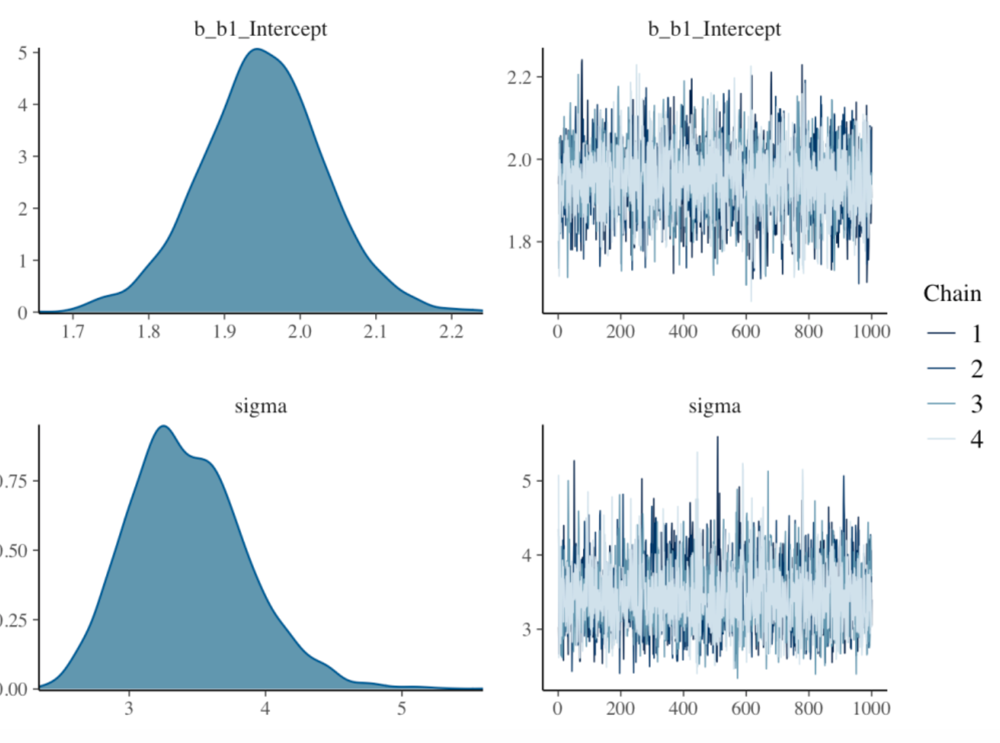
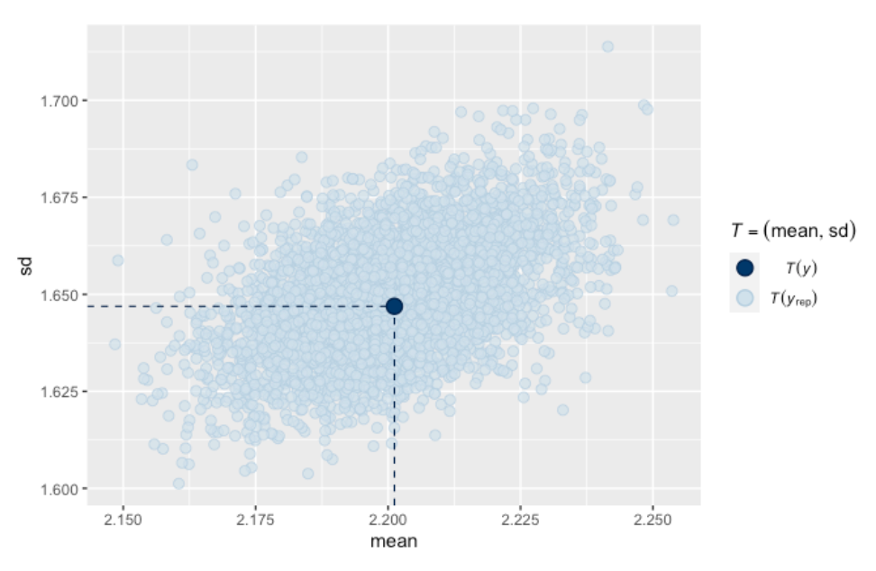

Bayes Thinking
1 Introduction
This is a collection of posts from the blog “Exploring Baseball Data With R” that focus on Bayesian reasoning for baseball problems. Section 2 describes basic tenets of a Bayesian analysis in the problem of learning about a hitting probability.
Section 3 illustrates the process of constructing a prior for a hitting probability for a specific player. Section 4 considers the situation where one only observes the number of home runs and the number of at-bats and the home run probability are unknown. This section illustrates the process of constructing a prior on two parameters and performing the inference.
Section 5 considers an interesting prediction problem. Given a baseball team’s performance in one season, what is the chance it will decline in the following season? This section reviews Carl Morris’ example and illustrates this prediction exercise on the teams that won divisions one season.
Bill James’ Pythagorean formula is used to illustrate Bayesian modeling in Sections 6 and 7. One obtains interval estimates for the power parameter in the formula and one can predict the number of team wins given a value of the runs/runs allowed ratio.
Section 8 describes a simulation-based method, called Approximate Bayesian Computation, of implementing Bayesian inference by simulating pairs of values of the parameter and the statistic.
Section 9 considers several models for homeruns per game data. Section 9.1 the use of a Poisson random effects model to fit game-by-game home run data and predict the count of home runs in the remainder of the season. Section 9.2 considers the use of Poisson and negative binomial models to learn about the effect of temperature on home run hitting.
2 Bayesian Learning about a Hitting Probability
2.1 Introduction
For those of you learning data science and have some free time, there is a nice resource called DataCamp which offers short courses on a wide range of data science and modeling topics. I’ve just completed my own DataCamp course “Beginning Bayes” that will be available in the next month. I tried to put together a course where the only prerequisites are (1) some knowledge of R and (2) a little background in probability and regression. (I don’t do any calculus and there are few formulas.) The idea is to present Bayesian thinking to data scientists who don’t have strong math backgrounds.
I thought I’d introduce some of the ideas in my course and a new package ProbBayes that provides a number of helper functions for communicating Bayesian thinking. Of course, I’ll use baseball as my context.
2.2 Installing the ProbBayes Package
Although the package is on CRAN, I’d recommend installing the developmental version of the package from my github site:
library(devtools)
install_github("bayesball/ProbBayes")2.3 Learning about a Hitting Probability
Here is an illustration of using discrete priors to learn about a player’s hitting probability. Suppose you are interested in estimating \(p\), the probability of a hit, for a specific player. You think that values of .2, .21, .22, …, .34 are all plausible values of his hitting probability and you assign a uniform prior to these values where each value gets the same probability (here there are 15 values and so I assign a probability of 1/15 to each value). This prior indicates that I am pretty clueless about possible true batting averages.
I set up a data frame with the variable P the values of \(p\), and the variable Prior has the prior probabilities.
bayes_df <- data.frame(P = seq(.2, .34, by=.01),
Prior = rep(1/15, 15))Next we observe some data. My player gets to hit 100 times, getting 30 hits. This is binomial data with sample size 100 and probability of success \(p\). The likelihood is the binomial probability of this outcome, viewed as a function of the hitting probability. I add the likelihoods to the table using the function dbinom().
bayes_df$Likelihood <- dbinom(30, size=100, prob=bayes_df$P)What have we learned about the player’s hitting probability? We use Bayes’ rule – there is a special function bayesian_crank() for computing the posterior probabilities for P. (Bayesians use the “bayesian crank” phrase to express the straightforward way of revising opinion using Bayes’ rule.)
library(ProbBayes)
(bayes_df <- bayesian_crank(bayes_df))
P Prior Likelihood Product Posterior
1 0.20 0.06666667 0.005189643 0.0003459762 0.006441961
2 0.21 0.06666667 0.009298519 0.0006199013 0.011542353
3 0.22 0.06666667 0.015390090 0.0010260060 0.019103886
4 0.23 0.06666667 0.023665974 0.0015777316 0.029376831
5 0.24 0.06666667 0.033980304 0.0022653536 0.042180121
6 0.25 0.06666667 0.045753808 0.0030502538 0.056794699
7 0.26 0.06666667 0.057990835 0.0038660557 0.071984655
8 0.27 0.06666667 0.069414736 0.0046276491 0.086165268
9 0.28 0.06666667 0.078696286 0.0052464190 0.097686556
10 0.29 0.06666667 0.084715503 0.0056477002 0.105158276
11 0.30 0.06666667 0.086783865 0.0057855910 0.107725756
12 0.31 0.06666667 0.084766785 0.0056511190 0.105221933
13 0.32 0.06666667 0.079079112 0.0052719408 0.098161762
14 0.33 0.06666667 0.070565582 0.0047043722 0.087593825
15 0.34 0.06666667 0.060308919 0.0040205946 0.074862118The prior_post_plot() function graphically compares the prior and posterior distributions for P.
prior_post_plot(bayes_df)
Before observing any hitting data, we were clueless about the guy’s hitting probability, but now it is more likely to be in a range of values about P = .300.
In fact, we can use the discint() function in the ProbBayes package to find a probability interval for P– the first input is a data frame (or matrix) with two variables (the first contains the values and the second the probabilities) and the second input is the probability content.
discint(select(bayes_df, P, Posterior), 0.6)
$prob
[1] 0.6015481
$set
[1] 0.28 0.29 0.30 0.31 0.32 0.33The probability the hitting probability falls between 0.28 and 0.33 is about 60 percent.
2.4 Using an Informative Prior
But of course our choice of prior was a bit lame. I know baseball and so I likely know something about the player’s hitting probability. We illustrate using an informative normal prior, and an approximate normal/normal Bayesian analysis here.
Suppose I’m interested in estimating Joey Votto’s 2016 batting probability before the beginning of the 2016 season. Looking at his season stats on Baseball-Reference, I see that his season AVG’s are generally in the .300 through .320 range. After some thought, I make the following statements:
His 2016 hitting probability \(p\) is equally likely to be smaller or larger than .310 (that is the median is .310). It is unlikely (with probability 0.10) that his hitting probability is smaller than 0.280 – in other words my prior 10th percentile of P is .280.
The function normal.select() with find the mean and standard deviation of the normal prior that matches this information:
(normal_prior <- normal.select(list(p=.5, x=.320),
list(p=.1, x=.280)))
$mu
[1] 0.32
$sigma
[1] 0.03121217I draw my normal(.320, .031) prior below using the special normal_draw() function.
normal_draw(c(.320, .031))Next we observe Votto’s 2016 hitting performance – he batting .326 with 556 at-bats. Here the data estimate of his hitting probability is .326 with an associated standard error of \(\sqrt{.326 * (1 - .326) / 556} = 0.0199\).
The normal_update() function will compute the mean and standard deviation of the normal posterior given a normal prior and a normal sampling density (reasonable approximation here). The inputs are the prior (mean and standard deviation) and data (sample mean and standard error). The teach=TRUE option is helpful for seeing how the prior and data information get combined.
normal_update(normal_prior, c(.326, .0199), teach=TRUE)
Type Mean Precision Stand_Dev
1 Prior 0.3200000 1026.484 0.03121217
2 Data 0.3260000 2525.189 0.01990000
3 Posterior 0.3242659 3551.673 0.01677967The posterior is normal with mean .324 and standard deviation 0.0168 – I use the many_normal_plots() function to compare the prior and posterior densities for P. This plot shows I am more confident (after seeing the 2016 season data) about Votto’s hitting probability.
many_normal_plots(list(c(.320, 0.0312), c(.324, 0.0168)))
Finally, I use the qnorm() function to construct a 90% probability interval for Votto’s 2016 hitting probability.
qnorm(c(0.05, 0.95), mean=.324, sd=0.0168)
[1] 0.2963665 0.35163352.5 Try the Course?
I encourage you to try the Beginning Bayes class at DataCamp when it is available. Since this is new type of teaching experience for me, I’m very interested in any feedback. One thing that is fascinating about teaching is that your audience always changes and one needs to think and try out new methods or pedagogies to be effective in communicating statistics.
3 Constructing a Prior for Lindor’s Hit Probability
3.1 Introduction
As the reader probably knows, I am a Bayesian statistician and have illustrated Bayesian thinking for a number of posts over the years of this blog. I’m thinking of collecting many of my Bayesian posts into a “Bayesball” book. In doing this, I realized that I have written little on the process of constructing a subjective prior. After all, one advantage of a Bayesian perspective is the ability to input subjective belief or prior information into the inference process. This seems especially relevant for baseball problems where one has collected many measures of performance for players and certainly has opinions about players’ abilities.
This post illustrates the process of constructing a beta prior that reflecting my beliefs about a player’s hitting ability. We focus on learning about the 2021 hitting probability for the great shortstop Francisco Lindor. We have relevant information on his hitting performance during the seasons with the Indians. We use this information to construct a prior, at the start of the 2021 season, for his hitting probability. We update this prior with data for the first few months of the 2021 season, obtaining a posterior. This posterior will be used to predict Lindor’s batting average for the remainder of the season.
In this exercise, I’ll illustrate the use of one of my Shiny apps that facilitates learning about a proportion using a beta prior.
3.2 The Prediction Problem
One of the recent big free-agent signings in Major League Baseball was Francisco Lindor who signed a 10-year contract with the New York Mets starting with the 2021 season. Through the games of June 27, 2021, Lindor has had a relatively poor hitting season with 58 hits in 265 at-bats for a 58/265 = 0.219 batting average. We are interested in predicting Lindor’s batting average for the remainder of the 2021 season.
We illustrate the use of a subjective prior on Lindor’s true 2021 batting average \(p\).
We use Lindor’s batting record for his first six seasons to construct a beta prior for \(p\).
We update our beliefs about \(p\) by using Lindor’s batting performance in the first part of the 2021 season.
We use the current beliefs about \(p\) to construct a prediction interval for Lindor’s future performance in 2021.
It will be helpful to use a Shiny app in this process that can be found at
https://bayesball.shinyapps.io/ChooseBetaNew2/
3.3 Lindor’s Batting Record
We want to construct a prior for \(p\), Lindor’s hitting probability for the 2021 season. We have relevant information, specifically Lindor’s batting performance for the 2015 through 2020 seasons. Below we display the number of at-bats (AB), hits (H) for these seasons.
## Year AB H BA
## <dbl> <dbl> <dbl> <dbl>
## 1 2015 390 122 0.313
## 2 2016 604 182 0.301
## 3 2017 651 178 0.273
## 4 2018 661 183 0.277
## 5 2019 598 170 0.284
## 6 2020 236 61 0.258The batting averages \(AVG = H / AB\) are not hitting probabilities, but represent Lindor’s hitting performances for these six seasons. But we can construct interval estimates for the hitting probabilities for the respective seasons. A standard 95% interval estimate for a probability has the form
\[\hat p - 1.96 SE, \hat p + 1.96 SE\],
where \(\hat p = H / AB\) is the sample proportion and the associated standard error is
\[SE = \sqrt{\frac{\hat p (1 - \hat p)}{AB}}\].
(By the way, these intervals are approximately Bayesian 95% probability intervals using a weakly informative prior.) I display the 95% bounds for the hitting probabilities against the season in the following graph. By looking at this graph, one see plausible values of the hitting probability for each season.

What do we see from this graph?
Lindor’s best seasons with respect to batting average were in the initial 2015 and 2016 seasons.
In 2017 through 2019, Lindor’s BA was pretty consistent between 0.277 and 0.284.
In 2020, Lindor had his smallest BA of 0.258, but we have less confidence in the value of the corresponding hitting probability since it was based on only 236 AB.
3.4 Specify Parameter Values of the Beta Prior
We wish to construct a \(beta(a, b)\) prior for Lindor’s hitting probability \(p\) for the 2021 season. It is difficult to directly specify the beta shape parameters \(a\) and \(b\) of this prior. It is helpful instead to specify values of \(\eta\) and \(K\) where
\[ a = K \eta, \, \, b = K (1 − \eta). \]
We first specify \(\eta\), the prior mean for \(p\). I place more weight on Lindor’s performance during the two most recent full seasons 2018 and 2019. So I specify that \(\eta\) = 0.280. (In other words, we think that Lindor is a “.280 hitter” during the 2021 season.)
The parameter \(K\) is reflective of the sureness of my prior guess that \(p\) is equal to 0.280. If I choose a larger value of \(K\), the hitting probability is more likely to be close to 0.280.
The Shiny app is helpful in determining a reasonable choice for \(K\). In the app, by use of sliders I choose the mean value \(\eta\) and the precision value \(K\). The top graph shows the selected beta prior and displays a 90% interval estimate for the hitting probability \(p\). (See the app snapshot below.) I choose a value for \(K\) that gives a plausible interval estimate for \(p\). After some trial and error, I am comfortable with the 90% interval estimate (0.244, 0.318) that corresponds to a beta prior where \(\eta\) = 0.280 and \(K\) = 400.

3.5 Update with 2021 Data
Using data from the 2015 to 2020 seasons, I have constructed a beta prior with \(\eta\) = 0.280 and \(K\) = 400. The corresponding shape parameter values of the beta curve are \[ a = K \eta = 400 (0.280) = 112, \, \, b = K (1 − \eta) = 400 (1 − 0.280) = 288. \] Now I observe 2021 hitting data for Lindor – he has 58 hits in 265 AB. Equivalently, he has 58 successes (hits) and 265 - 58 = 207 failures (outs).
One obtains the beta shape parameters for the posterior by simply adding the prior shape parameters to the numbers of successes and failures.
\[ a_1 = 112 + 58 = 170, \, \, b_1 = 288 + 207 = 495. \] The posterior mean is \(\eta_1 = 170 / (170 + 495) = 0.256\) and the posterior precision parameter is \(K_1 = 170 + 495 = 665\).
3.6 Prediction
One we have established that the posterior distribution for \(p\) is beta(170, 495), it is straightforward to make predictions for Lindor’s hitting for the remainder of the 2021 season by use of the posterior predictive distribution.
We can use our Shiny app to obtain a prediction interval. By using the sliders, we select the beta parameters \(\eta\) = 0.256 and \(K\) = 665. We have to choose the number of at-bats for Lindor the remainder of the season. Lindor is an everyday player – he has currently averaged 265 / 72 = 3.68 AB in the Mets’ first 72 games. If we assume the same per-game AB for the Mets’ 89 remaining games, Lindor would have 89 (3.68 ) = 328 remaining at-bats. So we select 328 AB for the size of the future sample.
There are two graphs in the app.
The top graph displays the posterior density for Lindor’s 2021 hitting probability \(p\). From the posterior, we are 90% confident that his hitting probability is between 0.228 and 0.283.
The bottom graph displays the predictive distribution for Lindor’s BA in the remaining part of the 2021 season. The 90% prediction interval for his BA is (0.207, 0.302). The probability this interval contains the future BA is 90%.
4 What Do You Learn From 45 Home Runs?
4.1 Introduction
Here is a simple question. Suppose you are told that a MLB hitter slugged exactly 45 home runs in a season. What have you learned about the number of balls in play and his rate of hitting home runs? This is a variation of the simple model where one assumes that one has binomial trials with a known sample size \(N\) and you want to learn about the hitting probability \(p\). Here both the sample size and the probability are unknown. This is actually a common problem when we want to predict a player’s home run count in the following season. We don’t know how many opportunities he will have next season and we don’t know the true rate that he will be hitting home runs.
I’ll illustrate a Bayesian approach to this problem. Our model is that \(y\) the number of home runs is binomial(\(N, p\)) where both \(N\) and \(p\) are unknown. I’ll construct a reasonable prior for \((N, p)\), update this prior with the observed count of \(y = 45\) home runs, and we’ll see what we have learned from this data.
4.2 Constructing a Reasonable Prior
I decide to focus on non-pitchers, and I decide to look at all of the players in the 2017 season with at least 100 balls in play. I don’t see much of a relationship between the balls in play and the home run rates, so I assume that my beliefs about \(N\) and \(p\) are independent, so I can represent my prior as \(g(N, p) = g(N) g(p)\) and focus on obtaining priors individually on each unknown parameter.
Below I show a histogram of the balls in play for all players with at least 100 BIP for the 2017 season. The smooth curve \(g(N) = 4.5 + 0.1898 N + 0.00033 N ^ 2\) seems to be a reasonable fit these BIP, so I’ll use that for my prior.

The prior on the batter’s probability \(p\) is more difficult to construct, as we don’t directly observe \(p\) but instead observe the HR rates \(HR / BIP\) for all hitters with at least 100 \(BIP\). We use the random effects model \(logit(p_i) = \theta_i\), where the \(\theta_i\) are assumed normal with mean \(\mu\) and standard deviation \(\sigma\). Using JAGS to fit this model, we obtain posterior estimates \(\hat \mu = -3.07, \hat\sigma = 0.542\). Assuming that our hitter is just a representative hitter among those with at least 100 BIP, I assume that \(logit(p)\) is \(N(-3.07, 0.542)\).
Below I display a contour graph of my prior on \(N\) and \(logit(p)\). This indicates that I’m pretty ignorant about the BIP, but I have some idea about the location of the home run probability.
4.3 Predictive Checks on My Prior
Before I am set with my prior, I should check if it predicts home run counts similar to what is actually observed in current seasons. I used the actual BIP counts and my normal prior on the logits to simulate a set of home run counts, and by summing the home run counts, I get an estimate at the total HR count for all hitters with at least 100 BIP. I repeated this simulation a number of times, and the actual 2017 home run count was consistent with values simulated from this predictive distribution. So I am satisfied that I have a reasonable prior and I can now update this prior with data.
4.4 Updating My Beliefs with Data
It is a relatively simple process to obtain the posterior of \((N, p)\). Remember I observed exactly 45 home runs and the likelihood is given by \(L(N, p) = {N \choose p} p^{45} (1 - p)^{N - 45}\). For each of the points in my grid, I multiply values of the prior and the likelihood, obtaining the posterior contour plot below. Note that \(p\) and \(N\) are negatively correlated – 45 home runs reflects a large \(p\) for a part-time player but a smaller \(p\) for a full-time player. I’m pretty confident that our hitter had at least 350 BIP in this season.
We are most interested in the player’s HR probability \(p\). To obtain that, I first simulate draws of \((N, logit p)\) from the grid of values – here I place the simulated draws on top of the contour graph.
I obtain the marginal posterior of \(p\) by constructing a density estimate of the simulated draws of \(p\). Based on observing 45 home runs, I am pretty sure that his home run rate is between 0.07 and 0.13.
4.5 Wrap-Up
Here’s some interesting features about this analysis.
The sample size is unknown. We probability spend too much time talking about the binomial model where we know the sample size in advance. In reality, we don’t know \(N\), so we should include that into the Bayesian analysis.
Using an informative prior. Assuming that the sample size is unknown complicates matters since, for example, there is not an obvious choice for a prior. But that is good since we need more practice thinking of informative priors. If we can’t think of relevant priors in the baseball context, then good luck working on priors on other applications.
Applying predictive checks. To see if any prior is reasonable, it is a good exercise to see if data predicted from the prior makes sense. Actually, it is easier to think about prediction of future data than it is to think about abstract parameters.
Computation is easy. This grid/simulation approach for summarizing posterior distributions is easy to apply and is a good starting point for learning about more sophisticated Bayesian simulation methods.
5 What is the Chance a Division Winner Will Decline the Following Season?
5.1 Introduction
In a couple of months, I will giving.a talk at the New England Symposium on Statistics in Sports reviewing Carl Morris’ contributions to statistical thinking in sports. In one of his review papers, Morris provides a nice baseball illustration of a Bayesian model explaining the regression to the mean phenomenon, the idea that extreme performances by teams or individuals tend to move to the average in the following season. Here I describe Morris’ example, use a Shiny app to illustrate the posterior and predictive calculations, and show that the results from this Bayesian model seem to agree with what happens in modern baseball competition.
5.2 The Model
Suppose you are given a team’s winning fraction one season. What is the chance that they will decline in the following season? Let \(y_1\) and \(y_2\) denote respectively the winning fractions of the team in the two seasons. We assume that \(y_1\) and \(y_2\) are independent where \(y_j\) is normal with mean \(p\) and standard deviation \(\sqrt{V}\). The proportion \(p\) is the ability of the team – if the team was able to play an infinite number of games, then \(p\) would represent its long-term winning fraction. Note that we’re assuming the team’s ability does not change from the first to second season. To complete this model, we put a prior on the team’s ability. We assume that \(p\) is normal with mean \(\mu\) and standard deviation \(\tau\).
5.3 Constructing the Prior
Morris’ best guess is that a baseball team is average which means that it would win half of its games in the long-run. Also he believes that it is unlikely that the team would win more than 60% of its games in the long run. So he assumes \(\mu = 0.50\) and \(\tau = 0.05\), so \(p \sim N(0.50, .05)\). The reader can check that the probability that \(p > 0.60\) is 0.023, which confirms Morris’ belief that a true winning fraction for the team larger than 0.60 is rare.
5.4 Bayesian Calculations
In this scenario, since teams are playing a 162-game season, a good approximation to the sampling standard deviation for an average team is \(\sqrt{V} = \sqrt{0.5 (0.5) / 162}\). Since \(V\) is known, the Bayesian calculations for this normal sampling/normal prior model are well-known. We observe the team’s winning fraction for the first season \(y_1\). The posterior density for the true winning fraction \(p\) given \(y_1\) is normal(\(\mu_1, \tau_1\)), where the mean and standard deviation are \(\mu_1 = (y_1 / V + \mu / \tau^2) / (1 / V + 1 / \tau^2)\) and \(\tau_1 = \sqrt{1 / (1 / V + 1 / \tau^2)}\).
Morris shows that the posterior mean of the true winning fraction is a compromise between the observed winning fraction \(y_1\) and the prior mean \(\mu\). One can rewrite the posterior mean as
\(\mu_1 = (1 - B) y_1 + B \mu\)
where \(B\) is the shrinkage factor
\(B = V / (V + \tau^2)\).
Actually we are most interested in predicting the team’s fraction in the following season \(y_2\). So we compute the predictive density of \(y_2\) given \(y_1\).
Morris shows that this predictive density is normal with mean \((1 - B) y_1 + B \mu\) and standard deviation \(\sqrt{V + V (1 - B)}\).
What is the chance that the team declines (in winning fraction) the following season? To answer this question, we look at the predictive density of the change in winning fractions \(y_2 - y_1\) given \(y_1\), focusing on the probability \(P(y_2 - y_1 < 0)\). How much do we expect the team to decline? To answer this, we look at the mean of the predictive density of \(y_2 - y_1\).
5.5 Shiny App
I wrote a short Shiny app PredictWinningFraction() to illustrate these calculations. A snapshot of the app is displayed below. Since I think it is easier to think about quantiles, one input in this app are the prior quartiles of \(\mu\). In this example, note that the prior quartiles are set to 0.466 and 0.534 which corresponds to a mean of 0.50 and standard deviation of 0.05 for Morris’ normal prior for this “average” team. A second input is the observed winning fraction for the first season \(y_1\) which is 0.59 in this example. There are two graphs displayed in the app – the top graph shows the prior and posterior of the true winning fraction \(p\) and the bottom graph shows the predictive density of the change in winning fractions \(y_2 - y_1\). The table below the graph displays the summary calculations. We see the posterior of \(p\) given \(y_1 = 0.49\) is N(0.556, 0.031). In this example, the shrinkage factor is
\(B = \frac{0.25 / 162}{0.25 / 162 + 0.05^2} = 0.382\)
which means the posterior mean of \(\mu\) is a weighted average of the prior mean \(\mu\) and the observed fraction \(y_1\) with respective weights 0.38 and 0.62.
From the table, the predictive density of \(y_2 - y_1\) is N(-0.034, 0.050). The probability of a drop in winning fraction for this particular team in the following season is 0.752 and we predict the drop to be -0.034. One nice feature of this app is that you can modify the inputs – for example, one might adjust the prior quartiles if you believe this team is above-average in ability, and you can change the observed winning fraction of the team.
5.6 How Do the Division Winners Perform the Following Season?
In MLB, using the Lahman package, I collected the winning fraction and the winning fraction in the following season for all division winners from 1969 through 2021. For the 265 division winners, the proportion that had a lower winning fraction the following season was 0.751. The average drop in winning fraction was 0.0435.
I next applied Morris’ model. Using each division winner’s winning fraction, I applied the Bayesian model with Morris’ average team prior and computed the probability of dropping in winning fraction in the following season and the mean drop size. I averaged these computations over the 265 division winners – I found the average probability of dropping in the next season to be 0.745 and the average drop size to be 0.0343. Note that the average drop probability 0.745 from this Bayesian model agrees closely with the actual observed drop fraction of 0.751, but the average drop size of 0.0343 from the model underestimates the observed average drop of 0.0435.
5.7 Comments
(Morris’ article). In the article, Carl Morris is reviewing the baseball examples (such as the famous Efron and Morris example of simultaneously estimating 18 batting averages) that illustrate multilevel modeling. He used this division winner example to demonstrate the notion of Bayesian shrinkage. It is a relatively simple example of the two-stage Bayesian model that uses familiar data to a baseball fan.
(Assumptions in the Bayesian model). There are two key assumptions in the Bayesian model. One is that the strength of the team doesn’t change between the two seasons, and a second is the prior mean that the division-winning team is average. One could use the Shiny app with a prior that reflects the belief that the team is above-average where the prior mean exceeds 0.50. But it is interesting that this use of this average team prior leads to the predictive calculation that 74.5% of the teams will experience a drop in the second season which agrees with the observed percentage drop among the 265 division winners in baseball history.
(Shiny code?). The code for this Shiny app
PredictWinningFraction()is available as part of myShinyBaseballpackage. The app is self-contained, so the interested user can try it out by downloading the singleapp.Rfile and placing it in a new folder, launching theapp.Rfile in RStudio, and running the app by use of therunApp()function.
6 Pythagorean Modeling - I
6.1 Introduction
As you may know, I am a Bayesian statistician and so I think of inference and prediction from a Bayesian perspective. Although many of my posts have illustrated Bayesian thinking, I thought it would be good to have a new series of posts introducing Bayesian modeling in simple settings. Here I introduce some features of Bayes, using a model that should be familiar to all “quantitative” baseball fans. (By the way, I know that some MLB teams have placed ads for analysts who are familiar with Bayesian inference, so MLB understands the usefulness of this inferential approach.)
6.2 Bill James’ Pythagorean Formula
Many years ago, Bill James found empirically a simple relationship between a team’s wins and losses and the runs scored and allowed. This Pythagorean relationship has the simple form that the ratio of wins ( W) to losses (L) is equal to a power of the ratio of the runs scored (R) to runs allowed (RA):
\[ \frac{W}{L} = \left(\frac{R}{RA}\right)^k \]
This formula is easy to demonstrate graphically. Below I construct a scatterplot of \(R/RA\) against \(W/L\) for the 2019 MLB teams and have overlaid a Pythagorean curve using the exponent value of \(k = 1.8\).
6.3 A Statistical Model Based on the Formula
Here is a Bayesian extension of this Pythagorean relationship. We assume that a team’s actual win loss ratio \(W/L\) is normally distributed with a mean given by the runs ratio taken to a power \(k\), and a standard deviation \(\sigma\). We write this as
\[ \frac{W}{L} \sim N( \left(\frac{R}{RA}\right)^k,\sigma) \]
The unknown parameters of this model (the quantities we want to learn about) are the exponent value \(k\) and the standard deviation \(\sigma\). In Bayesian thinking, we regard these unknown parameter values as random and we express our beliefs about the location of these values by means of a prior probability distribution.
6.4 Figuring Out the Prior
Okay, this is one of the tricky Bayesian things – how does one specify priors for the model parameters k and \(\sigma\)? I describe some ways of doing this below.
Independence. First, I am going to assume that my prior beliefs about the power parameter \(k\) are independent or unrelated to my prior beliefs about \(\sigma\). That seems to be a reasonable assumption and it makes it easier to construct a prior.
Prior for the Pythagorean exponent \(k\)? When Bill James introduced this formula, he said that \(k\) was in the neighborhood of the value 2. So a reasonable guess at \(k\) would be 2 and this would be the mean of my prior. So I start with the belief that \(k\) is normally distributed with mean 2 and a standard deviation \(S_1\). The value of the standard deviation \(S_1\) reflects the strength of my prior belief that \(k\) is equal to 2. Suppose I don’t have a lot of confidence in the guess of 2, and think that \(k\) could plausibly be any value between 1.5 and 2.5. Based on this statement, I assume that \(S_1\) = 0.5. My prior for \(k\) is normal with mean 2 and standard deviation 0.5.
Prior for the standard deviation \(\sigma\)? It is pretty hard to construct a prior for the standard deviation \(\sigma\). This standard deviation reflects the variation of a team’s win/loss ratio for a fixed value of the runs ratio. (Looking at the scatterplot above, these would be the vertical deviations from the average for a fixed value of the horizontal variable \(R/RA\).) This might be a hard parameter to guess at since we aren’t that familiar with teams’ win/loss ratios and how they can vary. In cases like this when it is hard to think of a prior, one can use a weakly informative prior for \(\sigma\) that reflects little knowledge about this parameter. Here is one weakly informative prior we can try: \(\sigma\) has an exponential distribution with rate 1.
6.5 Simulating from the Predictive Distribution
Does this prior make sense? So we have stated a prior where the exponent \(k\) is normal(2, 0.5) and \(\sigma\) is exponential(1). Is this a reasonable prior? Before we go further, a good idea is to perform so-called predictive checks. Basically, what we do is to simulate data, that is win/loss ratios, from the predictive distribution assuming our prior and see if this simulated predicted data looks like data we might see in baseball seasons. If this simulated data looks fine, then our prior is reasonable.
- A predictive simulation. Suppose we have a team whose runs ratio is equal to 1.2 – that is, this team scores 20% more runs than it allows. What values of the \(W/L\) ratio would we predict for this team assuming our prior model? We do this in two steps: (1) We first simulate values of \(k\) and \(\sigma\) from our prior (from normal and exponential distributions) and (2) simulate W/L ratios from a normal distribution with mean (1.2)^k and standard deviation \(\sigma\). I can do this using three R commands.
k <- rnorm(1000, mean = 2, sd = 0.5)
sigma <- rexp(1000, rate = 1)
wl_ratio <- rnorm(1000, 1.2 ^ k, sigma)Since we are not familiar with win/loss ratios, I will convert those ratios to games won in a 162 game season, and then display a histogram of the games won.

Even the casual baseball fan will realize that this plot does not make sense – how can a baseball team win a negative number of games or even win 150 games in a 162-game season?
6.6 What Went Wrong and Adjusting My Prior
What we showed is that if we assume a particular prior for \(k\) and \(\sigma\), we get unrealistic predictions for the number of games won (in a full season) by a team who scores 20% more runs than it allows. If our prior results in bad predictions, this suggests that we need to adjust our prior. Recall our prior is
\(k\) is normal(2, 0.5) and \(\sigma\) is exponential(1)
After some reflection, I think my prior on \(k\) is reasonable, but the prior on \(\sigma\) puts a lot of probability on large values of \(\sigma\) which seems unreasonable given the scatterplot that we saw earlier. (The variation of the points for fixed values of \(R/RA\) is certainly smaller than 1.) I am going to revise my prior on \(\sigma\) so that the mean is 0.1 instead of 1, so my prior is now
\(k\) is normal(2, 0.5) and \(\sigma\) is exponential(10)
(By the way, the rate parameter of an exponential is the reciprocal of the mean, so a rate of 10 is the same as a mean of 1 / 10 = 0.01.) Let’s simulate new data using this prior. Again assume we have a team that scores 20% more runs than it allows. Using the same simulation scheme, here is a histogram of the number of wins for this team in a 162-game season. This plot looks more reasonable although it is seems somewhat likely for this team to win 100+ games.
6.7 Comments and Looking Ahead
This post was inspired by my reading of the 2nd edition of the Bayesian regression text Rethinking Statistics where McElreath talks a lot about the use of predictive simulations to understand the consequences of a particular choice of prior.
The idea here is to introduce Bayesian modeling in a setting that is familiar. We took Bill James’ Pythagorean formula and created a corresponding regression model, allowing for variability in the \(W/L\) ratio for a fixed \(R/RA\) ratio.
One advantage of Bayesian thinking is that it gives one the opportunity to use expert information in constructing a prior. But we see that prior construction can be challenging, especially when dealing with a parameter like \(\sigma\) that is harder to interpret and specify. One is tempted as we did to try a weakly informative prior instead of doing the extra work to specify an informative prior.
Predictive simulation checks are very helpful in seeing if our prior makes sense. We saw that the choice of a weak prior for \(\sigma\) was not great since it led to predictions for game wins that seemed counter to what we know about games won in a season. This predictive check motivated us to think harder, and revise our prior for \(\sigma\).
In part II of this post, we’ll continue the study of this model and use our prior and data from a recent season in a Bayesian posterior analysis. In particular, we will illustrate how we can perform both inference (learning about the locations of \(k\) and \(\sigma\)) and prediction (how many games a team will win in a future season).
7 Pythagorean Modeling - II
7.1 Introduction
In Part I of this Bayesian modeling post, I introduced a Bayesian version of Bill James’ Pythagorean relationship. This model had two unknowns, the Pythagorean exponent \(k\) and the error standard deviation \(\sigma\) and I described constructing a prior for (\(k\), \(\sigma\)) that reflected one’s knowledge about the value of the power in James’ formula and how win/loss ratios can deviate from this formula. In this post, assuming we have a sampling model and a prior, I am going to discuss the mechanics of Bayesian learning about these parameters and predicting future response values.
Since one typically is interested in predicting wins instead of win/loss ratios, I am going to work with a slightly different version of the model where the number of team wins (in a 162-game season) follows a normal distribution where the mean is given by James’ formula, and \(\sigma\) reflects the variation of the win totals about the mean.
\[ \frac{W}{L} \sim N( \left(\frac{R}{RA}\right)^k,\sigma) \]
For a prior, I will assume \(k\) is normal with mean 2 and standard deviation 0.5 and \(\sigma\) is exponential with rate 1.
7.2 Posterior
We now observe data, that is, the \(W\) and \(R/RA\) values for the 30 teams in the 2019 season, and by Bayes’ rule, we find the new or posterior probability distribution for (\(k\), \(\sigma\)). The posterior density of (\(k\), \(\sigma\)) is equal to (up to a proportionality constant) the product of the likelihood (the probability of the observed data viewed as a function of the parameters) and the prior. All types of inference are found by summarizing this bivariate probability distribution.
7.3 Brute Force Calculation
A straightforward way to summarize the posterior is to find a grid of (\(k\), \(\sigma\)) values that cover most of the probability. I have a R package LearnBayes that makes it easy to implement this brute-force method. One writes a function logpost2() that computes the logarithm of the posterior density of (\(k\), \(\sigma\)). The arguments to this function are the vector of parameters theta and a data frame d that contains the data. Note that I’ve included both the likelihood and prior terms in this function.
logpost2 <- function(theta, d){
k <- theta[1]
sigma <- theta[2]
n_mean <- 162 * d$RR ^ k / (1 + d$RR ^ k)
sum(dnorm(d$W, n_mean, sigma, log = TRUE)) +
dnorm(k, 2, 0.5, log = TRUE) +
dexp(sigma, 1, log = TRUE)
}Next, by use of the gcontour() function, one finds a rectangle that covers the region where most of the probability falls. This function produces a contour plot where the contours are drawn at 10%, 1% and 0.1% of the largest posterior value and, by trial and error, I find a rectangle (specifically 1.6 < \(k\) < 2.3 and 2 < \(\sigma\) < 6) that covers these three contour lines.
gcontour(logpost2, c(1.6, 2.3, 2, 6), d)This contour graph is produced by computing the posterior density on a 50 by 50 grid. One way to summarize the posterior is to simulate a large number of values from the posterior computed on this grid and then summarize the simulated draws. I use the simcontour() function to do the simulation from this grid:
pts <- simcontour(logpost2, c(1.6, 2.3, 2, 6),
d, 5000)Here I display 5000 simulated draws from the posterior on the contour plot.

If I am interested primarily in learning about the exponent value \(k\), I collect those simulated values of \(k\) to perform inference. For example, here is a density estimate which represents the marginal posterior density of \(k\). A 90% interval estimate for \(k\) (found from the simulated draws) is (1.81, 2.09).

7.4 Simulation using Stan Software
Currently a popular and powerful way to perform Bayesian computations is to simulate from a Markov Chain that convergences in theory to the posterior distribution of interest. One particular type of simulation methodology is Hamiltonian MCMC sampling implemented by the Stan software. There are interfaces of Stan to other languages such as R or Python and the brms package provides a very attractive interface for fitting a large class of Bayesian models. I’ll illustrate using this package below.
First I specify the prior on (\(k\), \(\sigma\)) by use of two applications of the prior() function.
prior1 <- c(prior(normal(2, 0.5), nlpar = "b1"),
prior(exponential(1), class = "sigma"))Then I implement the Stan simulation by use of the brm() function in the brms package. Note that this function actually specifies this nonlinear model and the “family = gaussian” argument indicates that we are assuming normally distributed errors.
fit1 <- brm(bf(W ~ 0 +
162 * RR ^ b1 / (1 + RR ^ b1),
b1 ~ 1, nl = TRUE),
data = d, prior = prior1,
family = gaussian)Below I show some output of this function. The right set of graphs show streams of simulated draws of the parameters k and \(\sigma\) and the left set of graphs display density estimates of the simulated posterior draws of these parameters. One gets essentially the same estimates of the power parameter k as I got using the brute-force method. For example, the 90% interval estimate using Stan is (1.79, 2.12) which is very close to the interval (1.81, 2.09) using brute force. One advantage of the Stan software is that it can efficiently sample from very complicated Bayesian models with many parameters.

7.5 Prediction of Wins
Actually, the objective here is not about learning about the parameters \(k\) and \(\sigma\), but rather to predict the number of wins of a team who has a particular runs ratio.
We predict the number of wins by use of the (posterior) predictive distribution which can be simulated in a similar way that we simulated future data from the (prior) predictive distribution in Part I of my post. Specifically, we simulate a future number of wins by first simulating values of (\(k\), \(\sigma\)) from the posterior distribution and then simulating a wins total from the normal sampling distribution using these simulated parameter values. Using the brms package this is done using the posterior_predict() function. The arguments are fit1 (the output of the posterior fitting) and a data frame newdata containing the values of the runs ratio that we are interested in.
PP <- posterior_predict(fit1,
newdata = data.frame(
RR = seq(0.8, 1.2, by = 0.1)))I use violin plots below to summarize the simulated number of wins from the predictive distributions for these five values of the runs ratio. For example, a team that scores the same number of runs as it allows (RR = 1) will likely win between 70 and 90 games in a 162-game season. The amount of variation in these win totals might be surprising – this tells us, that there is more to winning games than just having a good runs ratio.

7.6 Summing Up
All of the R code for this exercise is available on my Github gist site.
In this study, we placed priors on the parameters and one general concern is the impact of these priors on the posterior analysis. This is easy to address by trying other priors and seeing if there is a change in the inferential summaries or predictions. If the predictions seem to depend on the choice of prior, then I’d think harder about the prior.
When possible, it is good to check one’s work by trying different computational methods. We did this by showing both a brute-force method and a modern simulation approach – both methods gave very similar estimates at the parameter \(k\) and \(\sigma\).
The purpose of this two-part post was to illustrate Bayesian modeling for a small regression problem. But we can easily generalize this problem to a situation where there is a obvious grouping of the data, and one is interested in doing many regressions, one for each group. For example, suppose we are exploring this Pythagorean relationship for many seasons and we want to apply this regression model for each season. Or maybe we have data for different professional leagues, say minor league, MLB, Japanese professional baseball, etc. and we want to apply this model to each league. This motivates the consideration of Bayesian multilevel modeling (and fitting using Stan) which will be the subject for a future set of posts.
8 Learning from Selected Data - Introduction to Approximate Bayesian Computation
8.1 Introduction
The media is fascinated with extreme performances during the regular season. For example, during the 2019 season, Mookie Betts had a 9 for 16 hitting performance. That is, during a specific group of 16 consecutive at-bats, Betts had 9 hits for a 9/16 = 0.562 batting average. Should we be impressed? What have we learned about Betts’ true batting average based on this selected data?
We can answer this question using Bayesian reasoning. We have some initial (prior) beliefs about Betts’ hitting probability that we represent by a prior density. We observe the data “9 hits in 16 at-bats” during the season and we use Bayes rule to find our updated (posterior) density of Betts’ probability \(p\) given this new information. The problem is that Bayes rule is challenging to implement for this specific problem. That is, the likelihood function (the chance of observing this 9 for 16 data for a specific value of \(p\)) is hard to construct and so one struggles to write down the expression for the posterior density. In situations like this, there is a simulation-based method called “approximate Bayesian computation” (ABC) that can be used to compute the posterior distribution. I introduce this ABC method for a simple example and then show how it can be used for our selected data problem.
8.2 Learning from Season Statistics
Let’s first describe exact and ABC approximations for a familiar Bayesian problem. Suppose I don’t know much about Betts’ hitting ability – I think Betts is an average hitter and construct a beta curve with shape parameters 55 and 155 to represent these beliefs. This beta prior says that my best guess at Betts’ hitting probability is around 0.262 and I’m 90% sure his probability is between 0.213 and 0.313. Now I observe Betts’ 2019 stats – he had 597 AB with 176 hits. Since we used a beta prior, a routine Bayesian calculation tells us that the posterior is also beta with new shape parameters 55 + 176 and 155 + (597 - 176).
Here is the ABC way of doing this calculation. This method is based on simulating a large number of values of the parameter \(p\) and the number of hits \(y\) from the Bayesian model. We start by simulating a large number of values of \(p\) from the prior. Since we are assuming the number of hits \(y\) is binomial with sample size 597 and probability of success \(p\), we next simulate values of \(y\) from a binomial distribution using the simulated values of \(p\). We can implement these two ABC steps in R using two lines of code.
iter <- 100000
p <- rbeta(iter, 55, 155)
y <- rbinom(iter, size = 597, prob = p)We observe 176 hits for Betts, that is \(y\) = 176. We collect the simulated values from the prior and keep only the values of \(p\) where y = \(176\) (the observed number of hits) – this new sample of values of \(p\) comes from the posterior.
Does this ABC method work? Below I graph the prior (brown curve), the exact beta posterior (red curve), and the density estimate of the ABC posterior simulated sample (blue curve). Since the beta and ABC posteriors are very similar, the ABC method appears to provide a good approximation to the posterior in this example.
8.3 Learning from Selected Data
Now that we’ve illustrated that the ABC method works, let’s apply it for our selected data problem. We start with the same beta(55, 155) prior, we observe a 9/16 streaky performance and we want to find the updated (posterior) distribution for \(p\).
Here are the steps for implementing the ABC method. This algorithm can be modified easy for other types of selected data.
(Simulate from the Prior) We simulate a single value p from my beta(55, 155) prior.
(Simulate Hit/Out Data) We simulate a sequence of 597 Bernoulli (0, 1) observations where the probability of hit is p.
(Did We Observe Our Streak?) We look over all sequences of 16 at-bats in our binary sequence – if we observe at least 9 hits in one 16 AB sequence, we record the statistic STAT = 1, otherwise STAT = 0.
(Repeat) We repeat steps 1, 2, 3 a large number of times, collecting a large sample of values of p and STAT.
(Obtain Posterior Sample) Since we observed a 9 out of 16 streak, we keep only the values of p where STAT = 1 – these filtered values will be a sample from the posterior.
Here’s a graph of the results – I graph the beta prior and the posterior using this ABC method. The posterior reflects what we learned about Betts’ hitting probability on the basis of his 9 for 16 performance. What is interesting is that the location of the posterior is located just a little to the right of the prior. This means is that we haven’t learned much about Betts’ hitting probability based on this 9 for 16 streak. Comparing this figure with the figure above, we certainly have learned less about Betts hitting probability from his 9 for 16 performance than we learned from Betts 176 hits in 597 at-bats in a full season.

8.4 Some Takeaways
Baseball fans tend to get excited about extreme performances such as no-hitters, hitting streaks or slumps, and World Series heroes. Although it is fine to recognize top performances in playoffs, these extreme performances don’t really tell us that much about the players’ abilities. In our example, we didn’t learn much about Betts hitting ability based on a 9 for 16 performance.
ABC provides a conceptually simple way to implement Bayes. It may be difficult to write down the likelihood function for a specific problem, but one can simulate parameter and data values from the model as we did above.
Suppose we observe that a player has a hitting slump of 0 for 20. It is easy to modify this ABC method to obtain the posterior from this slump data.
The tricky thing is that the ABC method is pretty inefficient (we only keep values of the parameter where the data value is what we observed) and one may not have a large enough sample of simulated values to get accurate estimates of the posterior. In that case, it may be better to keep the parameter values where the data value is “close” to what you did observe. There is an active research effort to work on good selections of “close”.
If you google “approximate Bayesian calculation” you’ll find many interesting applications of ABC. Given the simplicity of the algorithm, I think it is potentially useful in teaching Bayes at an introductory level.
9 Modeling Home Runs Per Game Data
9.1 Predicting Home Run Count Using a Random Effects Model
9.1.1 Introduction
I’m excited – saberseminar is coming up this Saturday and Sunday. I’m not sure I’ll be able to listen to all 50+ presentations, but there is a great lineup of talks and I’m happy to have the opportunity to present. There will be five talks on Sunday that talk about home runs and the bat & ball collusion. (We might learn at saberseminar what is happening with the baseball that has contributed to the increase in home run hitting.)
Since there likely will be a lot of discussion about home runs this week, I thought I’d devote this post to predicting the 2019 home run rate. This is an interesting statistical problem and I thought it would be instructive to show how a modern Bayesian might approach this prediction problem. This approach is a good foundation for more sophisticated models as I will explain in the closing comments.
In an earlier post, I illustrated an empirical approach for doing this home run prediction. Bob Carpenter gave a good illustration of Bayesian thinking for this problem in his comments to this earlier post. Here I am implementing a Bayesian model-based approach which has the advantage that it can be generalized in different ways.
9.1.2 Home Runs per Game are Not Poisson
To start, a basic statistical model says that the home run count for a particular game is Poisson with a single unknown rate parameter \(\lambda\). Honestly, I don’t believe this model is reasonable since I think that the rate of home runs per game is not constant – the rate would depend on the ballpark, teams playing, etc. Let’s illustrate a simple graphical method, called a Poisonness Plot, for checking if the observed home run counts over many games is Poisson distributed.
(Get data) Starting with the Statcast data I collect the count of home runs in each game played in the 2019 season.
(Bin the data) I have the home run counts in all games – numbers like 4, 3, 2, 3, etc. We bin these counts – get the number of games with a home run count of 0, number of games with a home run count of 1, etc.
(Construct the plot) We have the binned data \((y, Ny)\) where \(Ny\) is the number of games where there are exactly \(y\) home runs hit in a game. We compute the proportions \(p\) where \(p =y / Ny.\) A Poissonness plot graphs the values of \(y\) (horizontal) against the values \(PPy = log(p) + log(y!)\) (vertical). If these points follow a straight line, then the home runs are Poisson distributed where the slope is \(\log \lambda\). If not, there is some evidence that a Poisson distribution with a single rate is not suitable.
Here’s this Poisonness plot for the 2019 home run counts. There is a clear nonlinear pattern here – there are more low home run games and more high home run games than one would predict on the basis of a Poisson model with a constant rate.
9.1.3 A Random Effects Model
Okay, the Poisson model with a single rate parameter doesn’t work for home run counts per game. A simple way to generalize this model is by the following random effects model.
Assume that the count of home runs for the \(j\)th game is Poisson(\(\lambda_j\)) – we are assuming that the true rate of home runs is different for each game.
One assumes that the logarithms of the rates \(\lambda_1, ..., \lambda_N\) follow a normal distribution with mean \(M\) and standard deviation \(S\).
To complete the Bayesian model, one places weakly informative priors on \(M\) and \(S\).
9.1.4 Fitting the Model using Stan and the brms Package
Currently, we can fit these random effect models using simulation-based Bayesian software. One of the most attractive MCMC algorithms is Hamiltonian sampling implemented by the Stan software and the R package brms provides an attractive interface for this MCMC engine for many popular regression models.
It is remarkably easy to fit this random effects model. Here I have a data frame S with two variables game_pk and Hr. There is a simple formula to write the random effects model and by default (by use of the family = Poisson option) there will be a linear model on the log rates.
fit <- brm(HR ~ (1 | game_pk),
data = S,
family = poisson)When you run this program, you get estimates for \(M\) and \(S\), the parameters of the normal random effects density. Here the posterior means of M and S are 0.99 and 0.24, respectively. I’ve graphed the N(0.99, 0.24) density below. The fitted model says that the log Poisson means (for the different games) are distributed from this density.
Actually this function provides simulated draws of the joint posterior for all parameters – in particular, one obtains a simulated sample of values of \((M, S)\) – this represents a sample from the marginal posterior of \((M, S)\).
9.1.5 How Many 2019 Home Runs?
We want to predict the number of home runs in the remaining games in the 2019 season. Using Bayesian talk, we are essentially simulating from the posterior predictive distribution. One can simulate the count of home runs by a three step process:
(Step 1) First simulate a pair \((M, S)\) from the posterior – this represents a single (normal) random effects distribution.
(Step 2) In our illustration we have 799 games remaining. We simulate 799 values \(\lambda_1, ..., \lambda_{799}\) from the normal(\(M, S\)) distribution – these represent the true rates for the remaining games.
(Step 3) Finally we simulate home run game counts \(y_1, ..., y_{799}\) from independent Poisson distributions where \(y_j \sim Poisson(\lambda_j)\) – these numbers represent draws from the predictive distribution.
(Prediction) We sum these simulated home run counts \(y_1 + \cdots + y_{799}\) and add the current home run count – this total is a prediction of the final 2019 home run count.
I repeated this simulation 1000 times and collected the simulated final 2019 HR counts. Here’s a histogram of these simulated predictions. Quickly, I can see that my best guess for the 2019 HR total is about 6700 and I am pretty certain that this total will fall in the interval (6600, 6800).
By the way, when I did this exercise (Friday, August 2), we had played 1631 MLB games and there were 799 remaining games to play – at this time there were 4505 home runs hit in these 1631 games. So I expect to see about 2100 to 2300 additional home runs this season.
9.1.6 Improving the Model and Other Things
I like this approach since it illustrates the application of a complete Bayesian multilevel model and how one predicts future data from the model.
Also this model can be generalized in various ways. Earlier I mentioned that the home run count should depend on the ballpark and the teams. One can explicitly model this dependence by placing a regression model on the true rates \(\lambda_j\). This would be a good exercise for the interested reader.
All of the R code for this exercise can be found here on my Github Gist site. If you have the Statcast data, then you’ll see that the coding is pretty compact.
In my next post, I’ll focus on some of the interesting talks from the 2019 saberseminar.
9.2 Game-Time Temperature and Home Runs
9.2.1 Introduction
There is an interesting paper “Global warming, home runs, and the future of America’s pastime” by Callahan, Dominy, DeSilva and Mankin recently accepted for publication in the Bulletin of the American Meteorological Society. Reading from the abstract, the paper claims to show that higher temperatures substantially increase home runs. Connecting this finding with climate models, they find that over 500 home runs since 2010 are attributable to climate warming.
The paper can be divided into two parts. The first part describes several exploratory studies showing a temperature effect in hitting home runs. The second part of the paper relates this result with work from climate model experiments. I am not familiar with these climate model experiments, so I won’t comment on that part of the paper. But as part of the MLB home run commission, we did look at the effect of the game-time temperature on home run hitting. So I was particularly interested in the authors’ work on the connection between temperature and home runs and seeing if their results were consistent with our findings. The description of the statistical models used in the paper seemed incomplete. So I thought it would be a good exercise to describe the use of one particular model mentioned in the paper for exploring the relationship between temperature and home runs. In particular, I will demonstrate the problems with the use of a Poisson log linear model for this home run data. Using a more suitable Negative Binomial regression model, i show how one can implement Bayesian prediction of home run counts for a future season where the game-time temperatures are increased.
9.2.2 The Data
From the Retrosheet play-by-play files, I collected the home run counts for all games in the ten full seasons from 2012 through 2022. In addition, these files include the game-time temperature (degrees Fahrenheit) for all of these games. (By the way, the Chadwick command function cwgame was helpful to obtain these temperatures.) I have a single data frame with variables game id, temperature, home runs and season – each row corresponds to an individual game. Since we are interested in the effect of temperature on home runs in open-air stadiums, I remove all of the game data for home teams that have dome or retractable roof stadiums.
9.2.3 A Poisson Model for Home Runs Per Game
The paper fits the following “Poisson fixed effects” model relating the home runs hit in a game (HR) to the daily high temperature of the day of the game \(Tx\), the park \(p\), day of year \(d\) and year \(y\).
\[HR_{pdy} = \exp(\beta Tx_{pdy} + \mu_p + \gamma_d + \delta_y + \epsilon_{pdy})\]
Here are some comments on this particular model expression:
If we think of \(HR\) as the mean number of home runs hit in game, this is a Poisson log-linear model. The logarithm of the Poisson mean is written as a linear combination of several covariates.
Certainly it is reasonable to include park and season as covariates. We know the ballpark can have a significant impact on home run hitting and there have been large changes in home runs across recent seasons due to a combination of player and manufacture of ball behavior.
I didn’t understand the reasoning for day of the year as a covariate. The authors explain that it is included to account for the seasonality of home runs, but I would think that temperature variable would capture most of this effect.
The inclusion of the \(\epsilon\) term is puzzling since the Poisson family doesn’t have an extra error term. In fact, the Poisson model is characterized only by the mean and one is modeling the mean by a linear function of the covariates.
One can fit a Bayesian version of this Poisson regression model with covariates temperature, park and season using the brm() function from the brms package. This function implements the Stan algorithm to produce a simulated sample from the posterior distribution.
bfit <- brm(HR ~ TEMP_PARK_CT + PARK_ID + Season,
family = "poisson",
data = all_data2)9.2.4 A Problem
The Poisson is a poor fit to this home run data. The problem is that the data is overdispersed – there is more variability in the home run counts that one would predict from a Poisson model. You can detect this by use of a posterior predictive check.
First we simulate a replicated dataset from the posterior predictive distribution. We do this in two steps:
(Step 1) We simulate regression parameters (intercept and coefficients for temperature, ballpark and season) from the posterior distribution.
(Step 2) Given these parameter values, we simulate HR per game from Poisson distributions with means \(\exp(\beta Tx_{pdy} + \mu_p + \gamma_d + \delta_y)\). We call this a replicated dataset since we are using the temperature, ballpark and season values from the original dataset. The size of the replicated dataset will be the same as the original data.
The question is – do these simulated HR per game from the posterior predictive distribution look like the HR per game in our original dataset?
To answer this question, one thinks of a suitable “checking function” \(T(y)\). Here the checking function consists of the sample mean and standard deviation of the simulated sample from the predictive distribution. We repeat this simulation process (steps 1 and 2) a number of times, collecting the values of the checking function, and construct a scatterplot of the means and standard deviations. If the observed mean and standard deviation agree with the simulated values from the predictive distribution, then the data seems consistent with predictions from the model. Here is the posterior predictive check graph for our model fit:
The black dot is the mean and standard deviation of our observed home run counts. Clearly the observed standard deviation is much higher than values of the SD predicted from our model fit. The Poisson model is unsatisfactory – you don’t want to use it for any home run predictions for future seasons.
9.2.5 Fitting a Better Model
One can improve things by using a probability distribution that can accommodate the dispersion issue. The Negative Binomial does the trick – it is parameterized by the mean and an additional parameter that can soak up the additional variation. Like the Poisson, the log mean is written as a linear function of the predictors. The authors of the global warming paper say that the Negative Binomial regression model gives similar results as the Poisson. Some of the inferential results will be similar, say for learning about a regression coefficient. But predictions using the two models will be very different. And one goal of the paper is to predict the change in home runs for a future season with increased temperatures.
Here’s the function for fitting the same log-linear model with Negative Binomial errors. All I am changing is the family argument in the brm() function.
bfit2 <- brm(HR ~ TEMP_PARK_CT + PARK_ID + Season,
family = "negbinomial",
data = all_data2)We can do a similar posterior predictive check for this fitted regression model. This is just like steps 1 and 2 above with the exception that in step 1, you will also be simulating a value of the Negative Binomial dispersion parameter and simulating Negative Binomial variates in step 2. The scatterplot of the predictive means and standard deviations from the many simulations is displayed below. Note that the observed mean and standard deviation is right in the middle of the predictive distribution. This is telling us that the data is consistent with predictions from this Negative Binomial regression model using this particular checking function.

9.2.6 Estimating the Temperature Effect
From the fit of this Negative Binomial regression model, we can estimate season, ballpark and temperature effects. We estimate the temperature coefficient \(\beta\) to be 0.009. Remember that our regression model is on the log scale, so 0.009 is the change in the log mean HR/game for each one degree increase in temperature. If the log mean increases by 0.009, then the mean will increase by a factor of exp(0.009) = 1.009. So each increase in one degree Fahrenheit at game time results in approximately 1% more home runs.
9.2.7 Predicting Home Runs in a Warmer Season
The paper talks about the increase in the total home run count in a future season with warmer temperatures. Let’s do a similar prediction exercise. Let’s suppose in a future season that the games are played in the same ballparks as in the 2022 season but each game time temperature is one degree higher than the 2022 temperature. We create a new dataset newdata2 with these new temperatures and the function predict() will simulate home run predictions for all games for this future season.
out2 <- predict(bfit2, newdata = newdata2,
summary = FALSE)Here is a histogram of the predictive distribution of the total home run count for this warmer season.
The total home run count for the 2022 season (for the open-air stadiums) was 3751 and the mean prediction for this future season is 3787. So we would predict that there would be 3787 - 3751 = 36 additional home runs due to this one degree increase in temperature. Again, note that a one-degree increase in temperature corresponds to approximately a 1% increase in the home run count. But we should not ignore the large variability in this prediction – a 90% prediction interval for the total HR count is (3635, 3943). So it is very possible that we would observe fewer home runs in this season despite the temperature increase. By the way, we would get a much narrower prediction interval estimate if we used the less suitable Poisson model. Part of the prediction process is simulating from the sampling distribution and one would get different results from simulating from the Poisson instead of the Negative Binomial distribution.
9.2.8 Comments
(The Paper) The Callahan, Dominy, DeSilva and Mankin paper is interesting, especially with its connection of climate change research with home run hitting. But I thought the statistical work describing the effects of temperature lacked clarity that motivated this post.
(Alan’s Post). Alan Nathan, who chaired the MLB Home Run committees, also wrote a short article on temperature and home runs. He focuses on the application of a second model that represents the probability that an inplay ball is a home run as a function of launch variables, ballpark, season and temperature. Here’s a link to his article.
(Temperature Effects are Relatively Small) Although temperature plays a significant role in hitting home runs, the size of the temperature effect is small relative to the effects of other variables during the Statcast era. In particular, I have shown in previous effects the large changes in home run hitting due to changes in player behavior (launch variables) and the composition of the ball. For example, there were 707 fewer home runs hit in 2022 compared to 2021 – that drop appears to be attributable to the composition of the ball.
(Other Models for Overdispersion) There are other ways of generalizing the Poisson model to accommodate overdispersion of the game home run counts. In this post from 2019, I illustrate the use of random effects – each game is assigned a different Poisson mean and the Poisson means are assigned a random effects distribution. I used a Bayesian treatment of this model to predict the final 2019 season home run count.
(Posterior Predictive Checking). Posterior predictive checking is a standard way for Bayesians to check if a fitted model is reasonable. We give a simple example of posterior predictive checking for binomial data in our Bayesian text here.
(Got Code?) All of the R code for this modeling can be found on my Github Gist site. The home run data is available on one of my Github repositories, so the interested reader should be able to reproduce my work including figures from the R script on the Github Gist page.
3.7 Comments
A Bayesian analysis allows one to input expert knowledge by the use of a prior density. The process of actually constructing a prior is challenging since most of us have little practice doing it. Choosing a beta density to reflect beliefs about the location of a probability is relatively simple, but this activity can give one experience in constructing priors for more sophisticated problems.
As the Shiny app shows, a prior or posterior has an associated predictive distribution for future data. For example, the last Shiny snapshot shows the posterior of the hitting probability and the implied (posterior) predictive distribution. Note that the predictive distribution is much wider than the posterior – for example, the 90% prediction interval estimate of the future BA is (.207, .302) which is wider than the 90% interval estimate for the true hitting probability. Predictive densities are wider since they incorporate two types of uncertainty – the uncertainty in the value of the hitting probability and the uncertainty in the observed BA given the hitting probability.